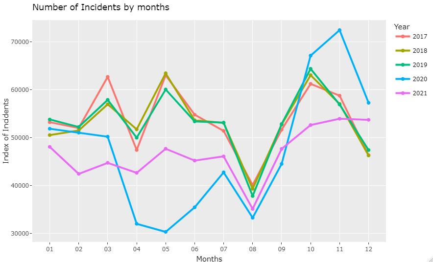

Code
library(accidentr)
library(ggplot2)
library(plotly)
library(dplyr)
library(scales)
library(tidyr)
library(treemapify)
library(reactable)
library(ltm)
library(highcharter)
library(purrr)
library(geojsonio)
library(httr)
library(readxl)This Report presents a set of main statistical findings and analysis in relation to indicators concerning accidents at work across Italy, the statistics presented in this report have been conducted using the software R, the data which represents Six-monthly incidents grouped by “region”, and the data concerning the number of employers are collected from INAIL website. First step, data is collected by region from INAIL website and then it is merged into one dataset. Second step a package is created in R to contain the dataset (accidentr ).
The dataset about incidents contains 25 variables and 3052056 observations, and the variables are grouped into 7 types as the following:
A - temporal location of the injury:
B - geographical location of the accident:
C - characteristics of the injured person:
date of occurrence, expressed in years of age;D - method of injury:
during work, in itinere);with or without);E - administrative characteristics of the injury:
positive or negative) or the exempt outcome or the preliminary investigation situation;positive or negative) or the situation in investigation;temporary, capital, direct annuity, survivors' annuity);F - medico-legal characteristics of the accident:
G - characteristics of the employer:
agriculture, industry and services, on behalf of the state;industry, crafts, tertiary, other activities;agricultural processing and food,chemical, paper and leather, construction and plant, energy and communications, wood and similar, metals and machinery;rock and glass mining,textiles and packaging, transport and warehouses,other activities).An accident at work is defined as a discrete occurrence during the course of work which leads to physical or mental harm. Fatal accidents at work are those that lead to the death of the victim within one year of the accident taking place. Non-fatal accidents at work are defined as those that result at least four full calendar days of absence from work (they are sometimes also called ‘serious accidents at work’). Non-fatal accidents at work may result in a considerable number of working days being lost and often involve considerable harm for the workers concerned and their families. They have the potential to force people, for example, to live with a permanent disability, to leave the labour market, or to change job.
The rest of the report is organized in the following, section two is the discussion of the number of accidents, section three is containing incidence index, section four analyses of impairment, indemnity, indemnified days, last section is devoured to the definition of total and permanent disability according to the degree of impairment.
Required Libraries
library(accidentr)
library(ggplot2)
library(plotly)
library(dplyr)
library(scales)
library(tidyr)
library(treemapify)
library(reactable)
library(ltm)
library(highcharter)
library(purrr)
library(geojsonio)
library(httr)
library(readxl)Load the data
data(Ita_Regions)overview of the data
#str(Ita_Regions)Check for missing values
sapply(Ita_Regions, function(x) sum(is.na(x)))Check for unique values in every columns
sapply(Ita_Regions, function(x) length(unique(x)))data_ita <- Ita_Regions
data_ita$Date_Time <- strptime(data_ita$DataAccadimento, format = "%d/%m/%Y")
data_ita$Year <- format(data_ita$Date_Time, "%Y")
data_ita$Month <- format(data_ita$Date_Time, "%m")
data_ita$NameMonth <- format(data_ita$Date_Time, "%b")Number_acc <- data_ita %>%
group_by(Year, Genere) %>%
count(Year)Number_gen <- Number_acc %>%
group_by(Year, Genere) %>%
summarise(total = sum(n)) %>%
spread(key = "Genere", value = total) %>%
mutate(Total = sum(M+F)) %>%
as.data.frame()`summarise()` has grouped output by 'Year'. You can override using the
`.groups` argument.#mydatareactable(
Number_gen,
columns = list(
Year = colDef(name = "Years"),
F = colDef(name = "Female Incidects"),
M = colDef(name = "Male Incidents"),
Total = colDef(name = "Total of Incident")
)
)In 2017, there were 643.1 thousand accidents at work across all Italy, which is the highest number of accidents with respect to the other years while 2021 has the lowest number of accidents. Overall, there were a decrease of -12.87 in the total number of accidents at work between 2017 and 2021. However, men were considerably more likely than women to have an accident at work. In 2021 more than two out of every three (63.5 %) of accidents at work in Italy involved men. Factors that influence these statistics are: the proportion of men and women who are in employment; the different types of work that men and women carry out; the activities in which they work. For example, there are far more accidents in the mining, manufacturing or construction sectors, which tend to be male-dominated.
The figure below confirms that the number of incidents among male population is about two out of every three (63 %) with respect to incidents among the female population.
Gender <- Ita_Regions %>%
count(Genere) %>%
mutate(pct = n / sum(n),
pctlabel = paste0(round(pct*100), "%"))
# plot the bars as percentages,
# in decending order with bar labels
ggplot(Gender,
aes(x = reorder(Genere, -pct),
y = pct)) +
geom_bar(stat = "identity",
fill = "indianred3",
color = "black") +
geom_text(aes(label = pctlabel),
vjust = -0.25) +
scale_y_continuous(labels = percent) +
labs(x = "Gendere",
y = "Percent",
title = "Incidents by Gender")
ggplot(Ita_Regions,
aes(x = Eta,
fill = Genere)) +
geom_density(alpha = 0.4) +
labs(title = "Incidents and Age distribution by Gender") +
theme_minimal()
From the figure above, we can see that injuries among female workers is at the highest rate around the ages 30, 40 and 50, while the age with most frequent injuries among male workers is around the ages 40, 50 and 60. However, at ages from 20 -30 the frequency of injuries for the female workers is higher than male, while at the ages lower than 20 the injuries rate is higher among male workers with respect to female workers. For ages greater than 40 till 60 the injuries is higher for male compared to female.
month_d <- data_ita %>%
group_by(Year, Month, NameMonth) %>%
count(Year)month_da <- month_d %>%
group_by(Year, Month, NameMonth) %>%
summarise(total = sum(n)) %>%
spread(key = "Year", value = total) %>%
as.data.frame()`summarise()` has grouped output by 'Year', 'Month'. You can override using the
`.groups` argument.reactable(
month_da, searchable = TRUE
)#mydatap <- ggplot(month_d, aes(Month, n, group=Year, colour=Year)) +
geom_line(size=1)Warning: Using `size` aesthetic for lines was deprecated in ggplot2 3.4.0.
i Please use `linewidth` instead.p <- p + geom_point() +
labs(title = "Index of Incidents by months",
subtitle = "Data 2017-2021",
x = "Months",
y = "Index of Incidents")
ggplotly(p)The figure illustrates the indices of accidents during the different years (2017 - 2021) for all months, analysing the years 2017 - 2019 we can see that the number of incidents at work follows more or less the same pattern during the months. The pattern shows three peeks; around March, May and October. The lowest number of incidents is registered in August, we observe as well that months with lower frequency of incidents are January, April and December. However, for the years 2020 - 2021 the years of pandemic we observe different behavior of the frequency of incidents at work with respect to the years 2017 - 2019. For the year 2020, May has the lowest number of incidents (30368) while November has the highest frequency of incidents (72483) compared to all years. In 2021, we see that the frequency of incidents follow the pattern of the years 2017 - 2019 but with considerably lower frequency of incidents.
mal_fem <- data_ita %>%
group_by(Year, DefinizioneAmministrativaEsitoMortale, Genere,
SettoreAttivitaEconomica) %>%
count(DefinizioneAmministrativaEsitoMortale) %>%
filter(DefinizioneAmministrativaEsitoMortale == "P" ) %>%
#group_by(Year, DefinizioneAmministrativaEsitoMortale, SettoreAttivitaEconomica) %>%
summarise(total = sum(n)) %>%
as.data.frame()`summarise()` has grouped output by 'Year',
'DefinizioneAmministrativaEsitoMortale', 'Genere'. You can override using the
`.groups` argument.mal_fem <-mal_fem %>%
filter(!grepl("ND", SettoreAttivitaEconomica))p <- ggplot(mal_fem, aes(SettoreAttivitaEconomica,
total, group=Genere, colour=Genere)) +
geom_line(size=1)
p <- p + geom_point() +
labs(title = "Number of incidents by economic sector",
subtitle = "Data 2017-2021",
x = "Economic sector",
y = "Number of Incidents") +
theme(axis.text.x = element_text(angle = 45,
hjust = 1))
ggplotly(p)The figure above shows information about the proportion of men and women who are in employment and the different types of work that male and female carry out.
Fetal_econ_sect <- data_ita %>%
group_by(Year, DefinizioneAmministrativaEsitoMortale, SettoreAttivitaEconomica) %>%
count(DefinizioneAmministrativaEsitoMortale) %>%
filter(DefinizioneAmministrativaEsitoMortale == "P" ) %>%
#group_by(Year, DefinizioneAmministrativaEsitoMortale, SettoreAttivitaEconomica) %>%
summarise(total = sum(n)) %>%
as.data.frame()`summarise()` has grouped output by 'Year',
'DefinizioneAmministrativaEsitoMortale'. You can override using the `.groups`
argument.Fetal_econ_sect <-Fetal_econ_sect %>%
filter(!grepl("ND", SettoreAttivitaEconomica))p <- ggplot(Fetal_econ_sect, aes(SettoreAttivitaEconomica,
total, group=Year, colour=Year)) +
geom_line(size=1)
p <- p + geom_point() +
labs(title = "Number of incidents by economic sector",
subtitle = "Data 2017-2021",
x = "Economic sector",
y = "Number of Incidents") +
theme(axis.text.x = element_text(angle = 45,
hjust = 1))
ggplotly(p)The figure above presents the number of fatal accidents according to the economic activity between the year 2017 and 2021. Within the economic sector,F43 Demolition and preparation of the building site, H49 Line transport and pipeline transport, F41 Construction of buildings, I56 Restaurant service activities and C25 Manufacture of metal products (except machinery and equipment) sectors are considered to be the sectors with greatly high frequency of accidents for the past years. In 2020, Q86 Health care witnessed a boom in the frequency of accidents and this number is influenced by the pandemic period Covid 19.
Non_Fetal_econ_sect <- data_ita %>%
group_by(Year, DefinizioneAmministrativaEsitoMortale, SettoreAttivitaEconomica) %>%
count(DefinizioneAmministrativaEsitoMortale) %>%
filter(DefinizioneAmministrativaEsitoMortale == "N" ) %>%
#group_by(Year, DefinizioneAmministrativaEsitoMortale, SettoreAttivitaEconomica) %>%
summarise(total = sum(n)) %>%
as.data.frame()`summarise()` has grouped output by 'Year',
'DefinizioneAmministrativaEsitoMortale'. You can override using the `.groups`
argument.Non_Fetal_econ_sect <-Non_Fetal_econ_sect %>%
filter(!grepl("ND", SettoreAttivitaEconomica))p <- ggplot(Non_Fetal_econ_sect, aes(SettoreAttivitaEconomica,
total, group=Year, colour=Year)) +
geom_line(size=1)
p <- p + geom_point() +
labs(title = "Number of incidents by economic sector",
subtitle = "Data 2017-2021",
x = "Economic sector",
y = "Number of Incidents") +
theme(axis.text.x = element_text(angle = 45,
hjust = 1))
ggplotly(p)The figure above illustrates the number of Non-fatal accidents according to the economic activity between the year 2017 and 2021. Within the economic sector, H49 Line transport and pipeline transport,F43 Demolition and preparation of the building site, F41 Construction of buildings, I56 Restaurant service activities and C25 Manufacture of metal products (except machinery and equipment) sectors are considered to be the sectors with greatly high frequency of accidents for the past years. In 2020, Q86 Health care and witnessed aN INCREASE in the frequency of accidents and this number is influenced by the pandemic period Covid 19.
decision <- data_ita %>%
group_by(Year, DefinizioneAmministrativaEsitoMortale, Genere) %>%
count(DefinizioneAmministrativaEsitoMortale)Fetal_incidents <- decision %>%
filter(DefinizioneAmministrativaEsitoMortale == "P" ) %>%
group_by(Year, DefinizioneAmministrativaEsitoMortale, Genere) %>%
summarise(total = sum(n)) %>%
as.data.frame()`summarise()` has grouped output by 'Year',
'DefinizioneAmministrativaEsitoMortale'. You can override using the `.groups`
argument.p <- ggplot(Fetal_incidents, aes(Year,
total, group=Genere, colour=Genere)) +
geom_line(size=1)
p <- p + geom_point() +
labs(title = "Index of injuries by months",
subtitle = "Data 2017-2021",
x = "Months",
y = "Index of injuries") +
theme(axis.text.x = element_text(angle = 45,
hjust = 1))
ggplotly(p)The graph illustrates the number of fetal incidents among male and female population. Men were considerably more likely than women to have incidents at work. As noted above, one of the main reason why the number of incidents is higher for men population (than women population) is related to the economic activities where they are more likely to work. Indeed, the number of accidents at work varies greatly depending upon the economic activity and is positively skwed in relation to male-dominated activities. In 2020 the number of fetal incidents in Italy were higher compared to other years, one of the factor that influenced this number is the pandemic Covid 19.
From the graph below we can see that, the first bin I which represents incidents in the industry and services sector which has the highest proportion of accidents 81% with respect to accidents in the other sectors, while incidents in the agricultural sector A shows the lowest frequency which is about 5% only. For the the incidents in working on behalf of the state S sector represent 14% of the accidents across Italy.
Gest <- Ita_Regions %>%
count(Gestione) %>%
mutate(pct = n / sum(n),
pctlabel = paste0(round(pct*100), "%"))
# plot the bars as percentages,
# in decending order with bar labels
ggplot(Gest,
aes(x = reorder(Gestione, -pct),
y = pct)) +
geom_bar(stat = "identity",
fill = "indianred3",
color = "black") +
geom_text(aes(label = pctlabel),
vjust = -0.25) +
scale_y_continuous(labels = percent) +
labs(x = "Incidents management",
y = "Percent",
title = "Incidents by management")# create a treemap with tile labels
plotprov <- Ita_Regions %>%
count(LuogoAccadimento)
ggplot(plotprov,
aes(fill = LuogoAccadimento,
area = n,
label = LuogoAccadimento)) +
geom_treemap() +
geom_treemap_text(colour = "white",
place = "centre") +
labs(title = "Injuries by province") +
theme(legend.position = "none")
The graph illustrate the proportions of accidents by province, we can see that 0.065 of accidents are occurring from 15 province of Milan which is the highest proportion of accidents compared to the other provinces, the second highest proportion of accidents are occurred in 58 Rome with a proportion of accidents equals to 0.054, the third province with high proportion of accidents is 1 Turin, while the province with the lowest proportion of accidents is 94 Isernia which is about 0.00086, the second lowest proportion of accidents is occurred in 101 Crotone with proportion of accidents equals to 0.00115 and the third lowest frequent of accidents is occurring in 102 Vibo Valentia with about 0.00124. However, the three province with the lowest frequency of accidents are located in south Italy while the province with high frequency of accidents are in the south and center of Italy.

The map illustrates the number of accidents distributed across all Italian provinces, and as noted above the provinces with highest number of accidents are; Milan, Roma and Turin, while the provinces with lowest number of accidents are; Isernia, Crotone and Vibo Valentia. The map confirmed that provinces with the highest number of accidents are located in northren and center Italy and the lowest number of accidents are located in southern Italy.
year_d <- data_ita %>%
group_by(Year) %>%
count(Year)year_d$Num_Wks <- c(16518031, 16911409, 17336533, 15960796, 17146622)
year_d$accident_Indx <- round((year_d$n/year_d$Num_Wks)*100, 4)reactable(
year_d,
columns = list(
Year = colDef(name = "Years"),
n= colDef(name = "Total of Incidents"),
Num_Wks = colDef(name = "Number of workers"),
accident_Indx = colDef(name = "Incidents Index (100)")
)
)An alternative way to analyse the information on accidents at work is to express the number of accidents in relation to the number of persons employed; this produces a ratio referred to as the incidence rate or incedent index. In the Figure below, simple incidence rates are shown relating the number of accidents to the overall number of persons employed. For any given year, these statistics give an indication of the likelihood that someone had an accident. In the years 2017 to 2021, the number of accidents per 100 employed persons ranged from less than 3.26 in 2021 to 3.89 accidents per 100 persons employed in 2017. The highest incidence rates among this years were recorded in 2017 and 2018, with 3.89 and 3.78 accidents per 100 persons employed respectively.
p <- ggplot(year_d, aes(Year, accident_Indx, group=Year, colour=Year)) +
geom_line(size=1)
p <- p + geom_point() +
labs(title = "Index of injuries by Years",
subtitle = "Data 2017-2021",
x = "Years",
y = "Index of injuries") + geom_point(aes(size = accident_Indx))
ggplotly(p)From the figure we can tell that, 2017 has the highest rate of incidents while 2021 has the lowest rate of incidents. However, the frequency of incidents has decreased dramatically by -11.18% from 2019 to 2020 and this is quit reasonable due to the pandemic (Covid 19), and the frequent of incidents has declined from 2020 to 2021 by -1.47%. In general, the frequency of incidents is showing a declining trend over the past 5 years period except the year 2019, there was an increase by 0.081% from the year 2018 to 2019.
Economic_sector <- read_excel("Indexes.xlsx", sheet = 3)
#head(Economic_sector)data_17 <- Economic_sector %>%
filter(Year == "2017")
ggplot(data_17,
aes(x = Settore_economica,
y = Index)) +
geom_bar(stat = "identity", fill = "indianred3",
color = "black") +
theme(axis.text.x = element_text(angle = 45,
hjust = 1)) +
labs (x = "Dconomic sectors",
y = "Index of injuries",
title = "Index of of injuries in different economic sectors",
subtitle = "Data - 2017") 
Within the economic sectors,E water supply; sewerage, waste management and remediation activities, N rental,travel agencies, business support services, H transportation and storage, C24 Steel industry and I Accommodation and catering service activities sectors are characterized as sectors with high incidents rate compared to all accidents at works in 2017. More than (4.98 %) of all accidents at work in Italy took place within the water supply; sewerage, waste management and remediation activities sector, while the rental,travel agencies, business support services (4.24 %) had the next highest share. Transportation and storage sector (4.06 %), Steel industry with index of (4.03 %), Accommodation and catering service activities (3.85 %). The sectors with low frequent of accidents are; J Information and communication services (0.74%), K Financial and insurance activities (0.745), C26 Manufacturing of telecommunications equipment (0.85%) and D Supply of electricity, gas, steam and air conditioning (0.97%).
data_18 <- Economic_sector %>%
filter(Year == "2018")
ggplot(data_18,
aes(x = Settore_economica,
y = Index)) +
geom_bar(stat = "identity", fill = "indianred3",
color = "black") +
theme(axis.text.x = element_text(angle = 45,
hjust = 1)) +
labs (x = "Dconomic sectors",
y = "Index of injuries",
title = "Index of of injuries in different economic sectors",
subtitle = "Data - 2018") 
For the years 2018, the economic sectors,E water supply; sewerage, waste management and remediation activities (5.22%), N rental,travel agencies, business support services (4.27%), H transportation and storage (4.12%), C24Steel industry and (4.01%) Q Health and social assistance (3.52%). Comparing these result to 2017 the order of the top rated sectors with high incidents index remain the same except I Accommodation and catering service activities is replaced with Q Health and social assistance in 2018, furthermore there is a slight increase of (0.24%) in water supply; sewerage, waste management and remediation activities sector in 2018 with respect to 2017. The sectors with low frequent of accidents are; K Financial and insurance activities (0.74%),J Information and communication services (0.79%), C14 Making of clothing items (except Fur clothing) (0.88%), C26 Manufacturing of telecommunications equipment (0.94%) and D Supply of electricity, gas, steam and air conditioning (0.95%). Here as well we see some changing in orders with respect to 2017.
data_19 <- Economic_sector %>%
filter(Year == "2019")
ggplot(data_19,
aes(x = Settore_economica,
y = Index)) +
geom_bar(stat = "identity", fill = "indianred3",
color = "black") +
theme(axis.text.x = element_text(angle = 45,
hjust = 1)) +
labs (x = "Dconomic sectors",
y = "Index of injuries",
title = "Index of of injuries in different economic sectors",
subtitle = "Data - 2019") For the years 2019, the economic sectors,E water supply; sewerage, waste management and remediation activities (5.05%), N rental,travel agencies, business support services (4.09%), H transportation and storage (4.02%), C24Steel industry and (3.88%) Q Health and social assistance (3.54%). Comparing these result to 2018 the order of the top rated sectors with high incidents index remain the same, furthermore there is a slight increase of these index compared to 2018. The sectors with low frequent of accidents are; K Financial and insurance activities (0.69%),J Information and communication services (0.73%), C14 Making of clothing items (except Fur clothing) (0.91%), C26 Manufacturing of telecommunications equipment 0.91% and D Supply of electricity, gas, steam and air conditioning (0.97%). Here as well we see some changing in orders with respect to 2017.
data_20 <- Economic_sector %>%
filter(Year == "2020")
ggplot(data_20,
aes(x = Settore_economica,
y = Index)) +
geom_bar(stat = "identity", fill = "indianred3",
color = "black") +
theme(axis.text.x = element_text(angle = 45,
hjust = 1)) +
labs (x = "Dconomic sectors",
y = "Index of injuries",
title = "Index of of injuries in different economic sectors",
subtitle = "Data - 2020") 
In the year 2020 there is a dramatic increase in the index of incidents for Health and social assistance sector and one of the main factor behind this phenomenon is the pandemic Covid 19, Q Health and social assistance sector is characterized with highest incident index (10.22%) compared to the past years, and this is reasonable due to the pandemic and how hospitals were operating during this period. However, A Agriculture, forestry and fishing as well witnessed an increase (4.19%) with respect to the past years. The flowing economic sectors showed a considerable declined E water supply; sewerage, waste management and remediation activities (3.96%), N rental,travel agencies, business support services (3.52%), H transportation and storage (3.45%), C24Steel industry and (3.31%). For the sectors with low incident of accidents we observed a considerable decline with respect to the past years, K Financial and insurance activities (0.45%),J Information and communication services (0.56%), C14 Making of clothing items (except Fur clothing) (0.68%), C26 Manufacturing of telecommunications equipment (0.65%) and D Supply of electricity, gas, steam and air conditioning (0.63%).
data_21 <- Economic_sector %>%
filter(Year == "2021")
ggplot(data_21,
aes(x = Settore_economica,
y = Index)) +
geom_bar(stat = "identity", fill = "indianred3",
color = "black") +
theme(axis.text.x = element_text(angle = 45,
hjust = 1)) +
labs (x = "Dconomic sectors",
y = "Index of injuries",
title = "Index of of injuries in different economic sectors",
subtitle = "Data - 2021") 
Analysing the Incidents rates foe the year 2021, there is a dramatic decline (-5.63%) in the index of incidents for Health and social assistance sector compared to 2021, although Q Health and social assistance sector is still characterized with highest incident index (4.59%) in 2021. E water supply; sewerage, waste management and remediation activities (4.24 %) had the next highest share, then H transportation and storage (3.45%), C24Steel industry and (4.06%), N rental,travel agencies, business support services (3.55%). For the sectors with low incident of accidents we observed a more or less a similar behaviour with respect to the past year 2020, K Financial and insurance activities (0.44%),J Information and communication services (0.62%), C14 Making of clothing items (except Fur clothing) (0.70%), C26 Manufacturing of telecommunications equipment (0.75%) and D Supply of electricity, gas, steam and air conditioning (0.68%).
tarif_inail <- read_excel("Indexes.xlsx", sheet = 2)
#head(tarif_inail)ggplot(tarif_inail, aes(fill=Tariffa_INAIL, y = Index, x=Year)) +
geom_bar(position="dodge", stat="identity") +
labs(title = "Index of injuries by Inail tariff",
subtitle = "Data 2017-2021",
x = "Years",
y = "Index of injuries")
Figure above presents an analysis of data according to large tariff group across the years 2017 to 2021, the groups that are characterized with high frequency of incidents are GG1 agricultural processing and food, GG4 energy and communications and GG7 rock and glass mining.
p <- ggplot(tarif_inail, aes(Year, Index, group=Tariffa_INAIL,
colour=Tariffa_INAIL)) +
geom_line(size=1)
p <- p + geom_point() +
theme(axis.text.x = element_text(angle = 45,
hjust = 1))
ggplotly(p)The figure above shows that years between 2017 - 2018 were characterized generally with highest incident rates. As noted before the groups with relatively high index of incidents are GG1 agricultural processing and food, GG4 energy and communications and GG7 rock and glass mining. In 2020 the highest index of incidents is recorded by agricultural processing and food and it was about 58.22%. For the energy and communications, the highest record of incidents is registered in 2021 which is about 52.88%. Considering rock and glass mining, it hits the highest record in 2019 with an index of 31.83%. The rest of the groups have a relatively low incident indices ranging from 2.255 recorded from GG2 chemical, paper and leather group to 0.32% recorded from GG0 other activities.
gestione <- read_excel("Indexes.xlsx", sheet = 1)
#head(gestione)ggplot(gestione, aes(fill=Gestione_tariffaria, y = Index, x=Year)) +
geom_bar(position="dodge", stat="identity") +
labs(title = "Index of injuries by management tariff",
subtitle = "Data 2017-2021",
x = "Years",
y = "Index of injuries")
Figure above presents an analysis of data according to management tariff across the years 2017 to 2021, the activities that are characterized with high frequency of incidents are industry and tertiary, except in the year 2020 other activities has the highest incident rate with respect to all years.
p <- ggplot(gestione, aes(Year, Index, group=Gestione_tariffaria,
colour=Gestione_tariffaria)) +
geom_line(size=1)
p <- p + geom_point() +
theme(axis.text.x = element_text(angle = 45,
hjust = 1))
ggplotly(p)Analysing the figure above, Industry, crafts and tertiary follow the same patterns of the incidents index between the years 2017 - 2021 except for the year 2020 tertiary showed an increase in the number of incidents (2.92%), while industry and crafts showed a decline (1.99%) and (1.72%) respectively. For the other activities, the incident index increased dramatically (4.8%) and this is the highest index recorded between 2017 and 2021.
idemnity <- Ita_Regions %>%
count(Indennizzo) %>%
mutate(pct = n / sum(n),
pctlabel = paste0(round(pct*100), "%"))
# plot the bars as percentages,
# in decending order with bar labels
ggplot(idemnity,
aes(x = reorder(Indennizzo, -pct),
y = pct)) +
geom_bar(stat = "identity",
fill = "indianred3",
color = "black") +
geom_text(aes(label = pctlabel),
vjust = -0.25) +
scale_y_continuous(labels = percent) +
labs(x = "Indemnity",
y = "Percent",
title = "Injuries with respect to Indemnity")
sort(prop.table(table(Ita_Regions$Indennizzo)), decreasing = TRUE)
TE NE CA RD RS
0.515423046 0.434740057 0.038614953 0.010215081 0.001006862 The figure above illustrates the types of indemnity resulting from accidents, which are temporary, capital, direct annuityand survivors' annuity. From the graph we can see that 52% of indemnified incidents are considered to be TE temporary, while 4% is considered as capital CA and 1% is direct annuity RD and about 0.1% are survivors’ annuity rs.
Total permanent disability (TPD) is a condition in which an individual is no longer able to work due to injuries. Total permanent disability, also called permanent total disability, applies to cases in which the individual may never be able to work again.
grad_60 <- data_ita %>%
filter(GradoMenomazione > 60)grad_60 <- grad_60 %>%
count(Indennizzo) %>%
mutate(pct = n / sum(n),
pctlabel = paste0(round(pct*100), "%"))
# plot the bars as percentages,
# in decending order with bar labels
ggplot(grad_60,
aes(x = reorder(Indennizzo, -pct),
y = pct)) +
geom_bar(stat = "identity",
fill = "indianred3",
color = "black") +
geom_text(aes(label = pctlabel),
vjust = -0.25) +
scale_y_continuous(labels = percent) +
labs(x = "Indennizzo",
y = "Percent",
title = "Injuries with respect to by Indemnity")The analysis of the degree of impairment is crucial in defining the total and permanent disability, here if the insurance company based on this dataset decide to identify a person with degree of impairment greater than 60 as TPA, then from the figure above we can see that 94% of the workers with degree of impairment greater than 60 are categorized as immediate annuity RD beneficiaries, and in this case the insurance comapny offers an immediate income to the annuitant, and 6% are categorized as survivors’ annuity DS beneficiaries, which allows the annuitant to ensure after death, a continuous lifetime annuity for their dependents.
grad_40 <- data_ita %>%
filter(GradoMenomazione > 40)grad_40 <- grad_40 %>%
count(Indennizzo) %>%
mutate(pct = n / sum(n),
pctlabel = paste0(round(pct*100), "%"))
# plot the bars as percentages,
# in decending order with bar labels
ggplot(grad_40,
aes(x = reorder(Indennizzo, -pct),
y = pct)) +
geom_bar(stat = "identity",
fill = "indianred3",
color = "black") +
geom_text(aes(label = pctlabel),
vjust = -0.25) +
scale_y_continuous(labels = percent) +
labs(x = "Indennizzo",
y = "Percent",
title = "Injuries with respect to by Indemnity")
The analysis of degree of impairment is crucial in defining the total and permanent disability, here if the insurance company based on this dataset decide to identify a person with degree of impairment greater than 40 as TPA, then from the figure above we can see that 98% of the workers with degree of impairment greater than 40 are categorized as immediate annuity RDbeneficiaries, which offers an immediate income to the annuitant, and 2% are categorized as survivors’ annuity DSbeneficiaries, which allows the annuitant to ensure after death, a continuous lifetime annuity for their dependents. However, when the insurance company decrease the threshold of the degree of impairment to 40, the number of persons defined as TPD is 2349, and when the threshold of the degree of impairment is 60, the number of persons defined as TPD is 856.